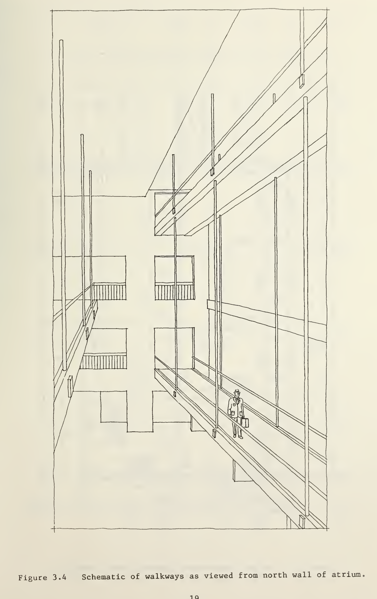
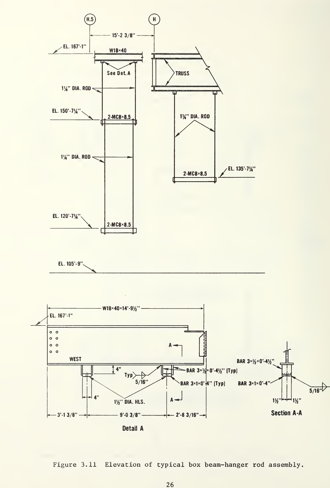
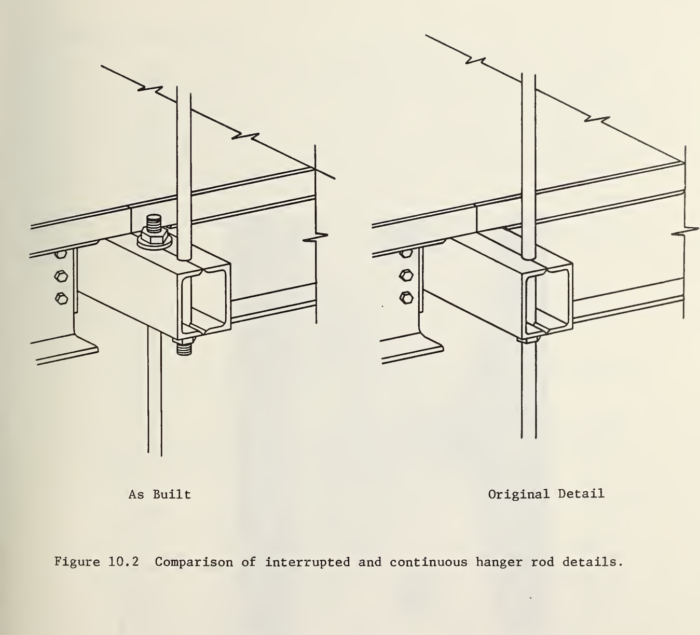

Kansas City · 17 de julio de 1981
Una estructura casi sin reserva
El hotel había abierto en julio de 1980. Su gran atrio, de varias alturas, estaba atravesado por tres pasarelas peatonales suspendidas. Un año después, centenares de personas acudieron a una velada de baile. Había público en la planta baja y espectadores sobre las pasarelas de las plantas segunda y cuarta, dispuestas una encima de la otra.
Durante el acto cedió una conexión de la pasarela de la cuarta planta. La pérdida de aquel apoyo redistribuyó la carga hacia las conexiones restantes, que tampoco podían resistirla. La pasarela superior cayó junto con la inferior que colgaba de ella; ambas impactaron sobre el atrio ocupado. Murieron 114 personas y 186 resultaron heridas.
El National Bureau of Standards —NBS, actual NIST— reconstruyó la ocupación a partir de una grabación de vídeo, pesó tramos recuperados, examinó las deformaciones y ensayó componentes y réplicas. Su conclusión fue incómoda: en el momento del colapso la carga máxima sobre una conexión crítica era solo el 31 % de la resistencia última que cabría esperar de una conexión dimensionada conforme al código de Kansas City. No hubo una sobrecarga extraordinaria. Había una resistencia extraordinariamente baja.
El caso en imágenes


 Reportaje histórico sobre el colapso
Imágenes del atrio y de las pasarelas para situar la investigación técnica del NBS.
Reportaje histórico sobre el colapso
Imágenes del atrio y de las pasarelas para situar la investigación técnica del NBS.
Tres pasarelas, dos sistemas resistentes
Las tres pasarelas cruzaban el atrio en las plantas segunda, tercera y cuarta. La de la tercera planta estaba desplazada lateralmente respecto de las otras y colgaba de la estructura de cubierta mediante su propio juego de barras. Las pasarelas segunda y cuarta, en cambio, estaban alineadas verticalmente. Esa alineación es esencial para comprender el accidente.
Cada pasarela se apoyaba transversalmente en tres vigas cajón. Cada una de estas vigas se había fabricado enfrentando dos perfiles en U y soldando sus alas longitudinalmente. Las barras verticales atravesaban la viga y una tuerca con arandela transmitía la reacción al ala inferior del cajón. La carga de la pasarela llegaba, por tanto, a una zona muy localizada: la arandela empujaba hacia arriba el fondo de una sección formada por chapas relativamente flexibles.
Una barra de suspensión puede parecer el elemento protagonista porque conduce la tracción hasta la cubierta. Sin embargo, la cadena resistente incluye también la tuerca, la arandela, las alas de los perfiles, sus almas y la soldadura que forma el cajón. La capacidad del conjunto no viene dada por la pieza visualmente más robusta, sino por el modo de fallo más débil de la conexión completa.

La barra no se rompió: atravesó la viga
Las barras y las tuercas no alcanzaron su rotura resistente. El fallo se concentró en la viga cajón alrededor de la arandela. Al aumentar la reacción, el ala inferior se deformó; las almas de los dos perfiles en U se doblaron hacia dentro y la unión dejó de ofrecer apoyo a la tuerca. La barra y su tuerca pudieron entonces pasar a través de la sección abierta por la deformación.
El NBS identificó como origen más probable la conexión situada en el extremo este de la viga cajón central de la pasarela de la cuarta planta. Una vez perdida, las demás conexiones recibieron parte de la carga que aquella ya no sostenía. Su escasa reserva hizo inevitable una rotura progresiva. Después, las barras inferiores arrastraron también la pasarela de la segunda planta.
El nombre «viga cajón» puede sugerir una sección rígida y cerrada, pero la carga entraba de forma concentrada por su ala inferior. Comprobar la barra a tracción no bastaba: había que verificar cómo esa fuerza se introducía realmente en las chapas de la viga.
Dos disposiciones parecidas que no cargaban igual
Los planos de contrato representaban una barra continua desde la cubierta hasta la pasarela de la segunda planta. La barra atravesaba la viga de la cuarta y terminaba bajo la viga de la segunda. En ese esquema, cada pasarela entregaba su peso y su sobrecarga directamente a la barra: la tuerca situada bajo la cuarta planta sostenía solo la cuarta planta.
La solución construida dividió esa barra continua en dos. Un primer juego unía la cubierta con la pasarela de la cuarta planta. Un segundo juego nacía bajo esa misma pasarela y descendía hasta la segunda. La pasarela inferior dejó así de colgar directamente de la cubierta y pasó a colgar de la superior.
La diferencia se entiende siguiendo las fuerzas. En la solución original, la carga de la segunda planta continuaba por su barra hacia la cubierta sin apoyarse en la tuerca de la cuarta. En la construida, las barras inferiores tiraban hacia abajo de la viga de la cuarta planta. Sus conexiones superiores tenían que sostener ahora las dos pasarelas. El aspecto general seguía siendo semejante, pero la reacción prácticamente se había duplicado.

Llamarlo simplemente «cambio de barras» oculta lo importante. No se sustituyó una pieza por otra equivalente: se modificó la jerarquía del sistema. La cuarta planta pasó de ser una pasarela suspendida a ser, al mismo tiempo, el soporte de otra pasarela.
El detalle original tampoco era seguro
La modificación agravó de forma decisiva el problema, pero deshacerla no habría convertido el proyecto en correcto. El NBS calculó que, con las barras continuas de los planos de contrato, la conexión habría alcanzado aproximadamente el 60 % de la resistencia última esperada conforme al código. El detalle aprobado ya tenía una capacidad insuficiente.
Para una conexión conforme al código, la carga de servicio de cálculo en la cuarta planta era de 40 700 libras, unos 181 kN. Aplicando el margen correspondiente, la resistencia última esperada era de 68 000 libras, unos 302 kN. Los ensayos y análisis del NBS estimaron para las conexiones construidas una resistencia última media de solo 18 600 libras, unos 83 kN: aproximadamente el 27 % de aquella referencia.
Con su propio peso, las pasarelas consumían ya casi toda la capacidad disponible. Desde el momento en que fueron construidas apenas tenían margen para admitir personas. La concentración de público no creó el defecto; proporcionó la carga ordinaria que terminó revelándolo.
Cuando un plano de taller cambia el proyecto
Los planos de contrato describen la intención estructural, pero los planos de taller convierten esa intención en piezas que pueden fabricarse y montarse. En este caso, el fabricante planteó por teléfono la disposición de dos juegos de barras. La aprobación verbal debía ir seguida de una solicitud escrita y de su revisión formal, pero esa cadena no llegó a completarse.
El detallado se subcontrató en un momento de elevada carga de trabajo. El delineante externo entendió que la conexión ya había sido calculada. Los planos regresaron solicitando una aprobación rápida; la revisión no incluyó un nuevo cálculo de las conexiones y finalmente recibieron el sello del ingeniero responsable. La geometría construida quedó definida, pero la responsabilidad por comprobar su resistencia se había fragmentado entre proyecto, fabricación, detallado y revisión.
Delegar el dibujo de una conexión no equivale a delegar la coherencia estructural. Si una propuesta altera dónde termina una barra, qué elemento recibe una reacción o qué cargas atraviesan una unión, el proyecto ha cambiado aunque la modificación aparezca en un plano de taller. Deben volver a abrirse el cálculo, la revisión y la aprobación.
Por qué no fue simplemente un error de cálculo
Decir que el colapso se debió a una carga duplicada identifica una causa inmediata, pero deja fuera la mitad de la historia. El detalle original incumplía el código; la conexión se trató como si otro participante fuera a terminar de diseñarla; la modificación cambió el camino de cargas; no se recalculó; la revisión de los planos de taller no la detectó y el sello profesional cerró el proceso sin que nadie hubiera verificado el conjunto.
Cada participante podía reconocer una parte del trabajo y, al mismo tiempo, suponer que otra persona controlaba el límite entre partes. Esa discontinuidad organizativa reprodujo la discontinuidad de las barras: justo en el punto donde la carga pasaba de un elemento a otro también se interrumpía la trazabilidad de la decisión.
El caso Hyatt Regency sigue siendo especialmente valioso porque el fallo técnico es comprensible y la respuesta profesional no admite una simplificación cómoda. La seguridad no termina al entregar los planos de contrato. Continúa durante el detallado, la fabricación, la aprobación de cambios y la construcción; quien aprueba debe poder explicar qué se ha comprobado y con qué criterios.
El coste y lo que cambió después
A las 114 muertes y 186 personas heridas se sumaron años de litigios, indemnizaciones y consecuencias profesionales. El órgano regulador de Misuri revocó las licencias de dos ingenieros por negligencia grave y conducta profesional indebida. El desastre quedó asociado desde entonces no solo al cálculo de conexiones, sino también a la obligación ética de proteger la seguridad pública.
ASCE respondió definiendo con mayor claridad la autoridad y la responsabilidad sobre el diseño de estructuras de acero, incluidas sus conexiones. Sus documentos posteriores insistieron en la continuidad de la información entre diseño, revisión de planos de taller y construcción, y en la necesidad de asignar expresamente quién diseña y quién aprueba cada elemento.
La enseñanza duradera no consiste en prohibir los cambios durante la obra. Los cambios son inevitables. Lo que no puede aceptarse es que una modificación capaz de alterar el camino de cargas quede clasificada como un ajuste de fabricación y atraviese el proyecto sin recuperar el mismo nivel de análisis que se habría exigido al diseñarla desde el principio.
Referencias y recursos
-
NBS Building Science Series 143: investigación del colapso
Informe técnico principal sobre la estructura, el mecanismo de fallo, las cargas, los ensayos y las conclusiones.
-
NBS IR 82-2465A: material complementario
Apéndice con resultados experimentales, caracterización de materiales, réplicas de las conexiones y documentación gráfica.
-
NIST: Hyatt Regency Hotel Walkway Collapse
Síntesis oficial de la investigación y del punto en el que probablemente se inició la rotura.
-
ASCE: The Hyatt Regency Walkway Collapse
Reconstrucción del proceso de diseño y aprobación y análisis de la responsabilidad profesional.
-
ASCE: Ensuring the Safety, Health, and Welfare of the Public
Consecuencias del caso para la asignación de responsabilidades, la revisión y el aseguramiento de la calidad.